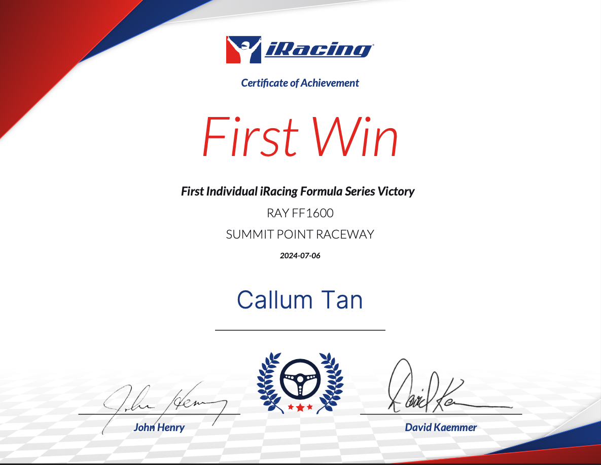
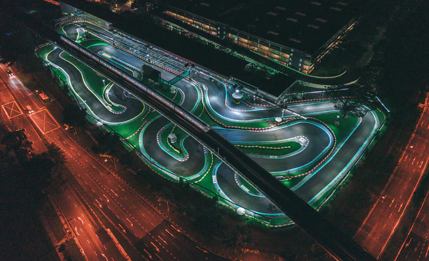
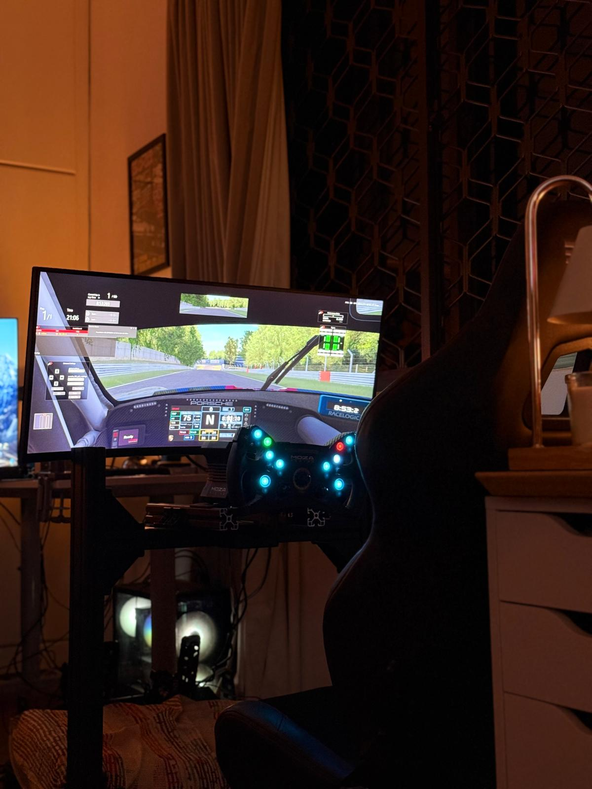
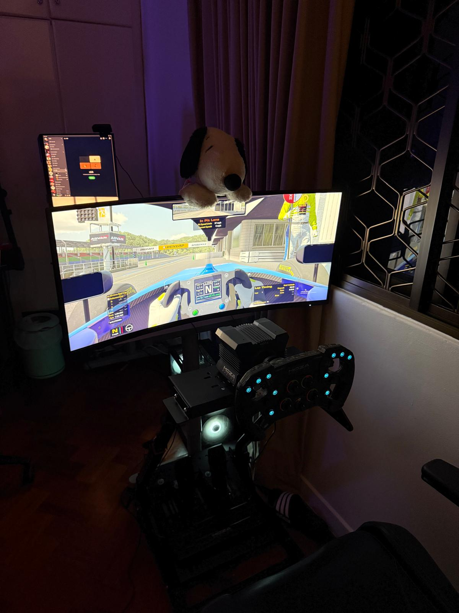

Hi, I'm Callum— a 15 year old Singaporean passionate motorsport enthusiast and a dedicated mechanical engineering major. My journey into racing began with karting, where I developed a deep appreciation for the technical and strategic aspects of the sport. Over time, my passion expanded into sim racing and engineering, allowing me to combine my love for driving with my technical expertise.
Through my engineering studies, I've gained valuable knowledge that has helped me refine my racing simulator, making it as close to real life as possible. From developing custom setups to fine-tuning physics for enhanced realism, I am constantly working to bridge the gap between virtual and real-world racing. Currently, I am developing and enhancing a 4080 aluminum profile sim rig, optimizing its structure for maximum stability and immersion. This project allows me to apply my engineering expertise to create a simulator that not only improves my own training but also serves as a platform for advancing sim racing technology.
I aspire to test cars for a racing team in the future, with the ultimate dream of competing in a full-season championship. Additionally, I aim to contribute to the development and enhancement of racing simulators, focusing on improving their realism, performance, and overall accuracy in both hardware and software aspects.
I race in multiple disciplines: F1 esports, go-karting, and sim racing. My focus is on pushing myself to the limit across different racing formats, constantly adapting my driving style and strategy to suit each one. The thrill of competition is what drives me, and each race presents a unique challenge, navigating the tight corners in karting, or mastering the technical aspects of sim racing. Every victory is a testament to the hard work and dedication I put into improving my skills across these disciplines.
GT3, GT4 Cars
Formula 4, Formula 3
LMP1, LMP2, LMP3, GTE (LMGT3)
Note; highest to lowest order
As of now, I am taking a break from competitive racing to focus on my studies, dedicating my time to expanding my knowledge in engineering. While I'm stepping away from the competitive scene, I am still deeply involved in the world of racing through sim racing. I am actively working on developing and refining my simulator, applying my engineering expertise to make it as realistic and immersive as possible. This allows me to stay sharp, experiment with different setups, and bridge the gap between virtual and real-world racing. Through this process, I continue to push my skills forward, ensuring that when I return to competitive racing, I’ll be more prepared than ever.
I have secured numerous victories in F4 on iRacing, along with the FF1600 series, MX5 Cup, M2 Cup, and Formula Vee. Each of these accomplishments represents a significant milestone in my journey as a driver, pushing me to refine my skills and continuously improve. Competing in different cars across a variety of tracks has given me invaluable experience, each race presenting its own unique set of challenges—whether it's mastering technical corners, perfecting racecraft in close battles, or adapting to varying track conditions.
Among my most memorable achievements is my first-ever F1600 victory at Summit Point Raceway. That race was a defining moment in my career, reinforcing my passion for racing and my commitment to honing my craft. The intense competition, the strategic overtakes, and the final push to cross the finish line in first place made it an unforgettable experience. It solidified my dedication to sim racing, proving that persistence and continuous learning are key to success in this sport.
I am a.....
iRacing FIA F4 Race Winner
iRacing FF1600 Race Winner
iRacing Formula Vee Race Winner
iRacing Mazda Mx5 Race Winner
iRacing BMW M2 Cup Race winner
iRacing GR86 Cup Race Winner
Former Top 50 Global (Assetto Corsa Competizione) Low Fuel Motorsport Bop Sitter
Karting Race Winner
I primarily raced in a ROK kart, spending countless laps around KF1 Karting Circuit in the Kranji area, pushing both myself and the machine to the limit. Mastering the track required precision—figuring out the optimal racing line, hitting every apex, and finding the right balance between aggression and control. I dedicated hours to refining my skills, learning how to adapt to different conditions and improve my lap times with every session.
Beyond competitive karting, I also participated in numerous rental-kart races at KF1, further sharpening my racecraft and gaining valuable on-track experience. While I eventually had to step away from race karts due to the high costs and the general lack of support for karting development, I still take part in rental kart races from time to time to stay connected to the sport and continue honing my driving skills. The lessons I’ve learned—both technical and strategic—remain invaluable, shaping my approach to racing, whether in real life or in simulation. And with that, I now spend most time on developing my simulator, racing in LFM (LowFuelMotorsport) and iRacing endurance races, like the 12h Bathurst, 24h Spa, etc.
My specialization lies in real simulation racing and sim racing setups. I am dedicated to refining both the hardware and software aspects of my simulator, ensuring that every detail—from force feedback to vehicle dynamics—closely replicates real-world racing conditions. By applying my engineering knowledge, I continuously experiment with different configurations, making precise adjustments to enhance realism. Whether it's optimizing the rigidity of my aluminum profile rig, fine-tuning force feedback settings, or analyzing telemetry data, I strive to push the boundaries of sim racing immersion. My ultimate goal is to create a simulator that not only improves my own skills but also serves as a testing ground for innovations in the field of racing simulation technology.
Beyond simulation, I have also helped a karting team test cars, allowing me to gain hands-on experience with real-world vehicle behavior and performance analysis. This experience has given me a deeper understanding of how race cars respond to different setups, which I apply to my work in sim racing to create even more accurate and immersive simulations.
I have worked on numerous custom racing setups and gained insights from real-world racing that I apply to my simulations. I continuously improve my simulator to replicate real-world physics and racing feel.
I am also assisting in building and refining karting simulators by offering guidance on design, setup, and performance optimization. This involves advising on hardware choices, fine-tuning force feedback, and integrating motion systems. Additionally, I help with software calibration, telemetry setup, and physics adjustments to create a more realistic and immersive simulation experience!
A short look of the progression of my simulator.
Right: S5 Technology Wheel Stand
Left: DIY 4080 Aluminum Profile Simulator Rig (Current Rig)
 There is a major distinction between simulation and esports in sim racing, and my focus is on pure simulation. Simulation racing is all about replicating real-world physics, car behavior, and track conditions as accurately as possible. It requires extensive research and analysis to determine which sim racing platforms offer the most realistic experience—evaluating tire models, suspension dynamics, aerodynamics, force feedback, and even laser-scanned tracks to ensure every bump and curve is as close to reality as possible. Every detail matters, from how tires degrade over a race stint to how weight transfer affects car handling.
In contrast, esports sim racing prioritizes competition over realism. While esports drivers are highly skilled, they often use game exploits, unrealistic setups, and physics loopholes to gain an edge. Their goal is to be the fastest within the game’s mechanics, not necessarily to drive in a way that mirrors real-life racing. In esports, conditions like excessive camber angles, extreme downforce settings, and unrealistic weather scenarios are commonly used because they provide performance advantages—even if they would never work in a real car.
If you'd like to get in touch, feel free to email me.